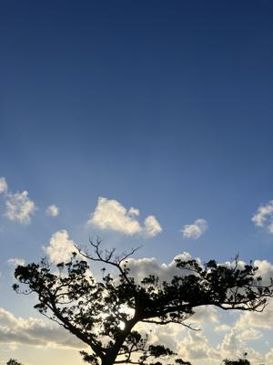
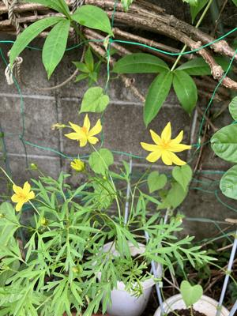
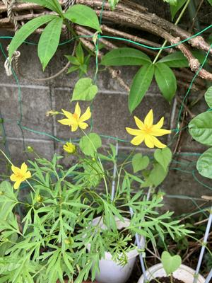

うるがいの話 ある日
最新: 台風の害虫駆除【うるがいの話 ある日】とは 一日だけのプログです
『うるがいの話』の最新一日だけのプログで、通信料が少なく経済的だ。カニの画像をクリックすると全ての日付が載る『うるがいの話』サイトを表示します
|
|
【うるがいの話】 うるがい(ｳﾙｶﾞｲ urugai)とは、『もずくがに』の名前でとても大きくなります。 |
|---|---|
|
|
【カミマヤーの話】 猫のことを方言でマヤーといいます。カミマヤー（kamimayaa）とは、神の猫のことです。 |
|
【たながぁの音楽】 たながぁ（ﾀﾅｶﾞｰ tanagaa）とは手長えびのことで、何種類かあり大きいのは車 エビぐらいになります。 |

|
【ぶながぁの話】 ぶながぁ(ﾌﾞﾅｶﾞｰ bunagaa)とは、赤い髪の毛、赤い身体、そして身長は１ｍ２０ｃｍ ぐらい、川の蟹を食べているの目撃された。場所は沖縄県国頭郡大宜味村のと ある村僕の隣近所に住んでいる爺さんから、聞いた話です。 |
|
|
【ギーマの話】 ギーマ(giima)とは、山原の里山に咲くスズランに似た、 花を付けます。実は食べられます、 気が付くと口の周りが紫になっています。 |
2023年09月15日 (金）台風の害虫駆除
16:43

 

琉球新報の声に、７９歳の方が投稿していた。ジョギングをしているとアカギ
の葉が綺麗になっている。もしかして、台風で害虫が駆除されたかも。しばら
く、ウグイスの鳴き声が聞こえなかったが、この前から少しずつホーホケキョ
が聴こえるようになってきた。妹の法事に来てくれた東村の農家のおばさんが
たまには台風で虫を飛ばしてもらわないと困ると言ったのを改めて思いだす。
洗濯乾燥機の部品が届き昼過ぎから、直してもらった。そばでジーと眺めてい
た、なかなか取り外しが難しそうで、さらに入れ替えもかなり苦労している。
不器用なひとかも・・・・・、予定の３０分近くになり何とか完了、試運転を
する、だめ（オエー）。やり直し、・・・、見学すると良くないかもと止める
一時間近くになってできましたと言われ、早速ドアを開けてみる。開かない！
え！、直ってないですよ。ん、私がやると開きますよ、コツがあるのですか？
・・・・、やがてコツをつかむ（タラリ、こんな筈でなかったのだが）。押し
問答は避け、部品は新品になったのでヨシと妥協。あとでヨメが、ドアを開け
る、固い！、修理前が良かった。マ、こんな事あるさ。
１６時０９分 ビットコインの総資産 ￥１１、３９３（↑１７２）